Anti Static Floor Cleaning Solutions
Specifications |
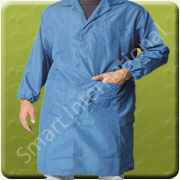 | ||
| Composition | : | Polyester filament yarn with conductive | |
| Material | : | 100 % Polyester | |
| Colour | : | Blue / White | |
| Surface restivity on the cloth | : | Less than 10 Degrees | |
| Static charge generation | : | Less than 200 Volts | |
| Rate of decay | : | < 2 sec | |
| Electro Conductive Yarn | : | Carbon | |
| Air Permeability (CC/Cm²/Sec ) | : | 9.3 | |
| Moisture Permeability (gr/m²/24 hrs) | : | 7.156 |
AntiStatic Floor Cleaning Solution :
Antistatic Floor Cleaner is specially designed liquid cleaner for the purpose of washing the Antistatic / Conductive PVC floors. Floor cleaner is neutral in PH Value with no ionic residues left behind after the floor is cleaned using the liquid. Anti static floor cleaner has disinfectant characteristics for hygienic reasons. Specially of this liquid is its capabilities to meet the demands of the static control measures in Electronic and related applications. |
|
|
|
Antistatic Floor Cleaner is specially designed liquid cleaner for the purpose of washing the Antistatic / Conductive PVC floors. Floor cleaner is neutral in PH Value with no ionic residues left behind after the floor is cleaned using the liquid. Anti static floor cleaner has disinfectant characteristics for hygienic reasons. Specially of this liquid is its capabilities to meet the demands of the static control measures in Electronic and related applications. |
|
|
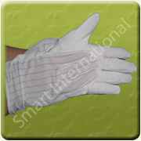 |
Specifications |
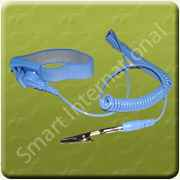 | ||
| Resistance | : | 1 Meg ohm | |
| Resistor film | : | ¼ watt, 1 Meg ohm carbon | |
| Insulation | : | Polyvinyl chloride extruded | |
| Colour | : | Blue | |
| Wrist Band | |||
| 22 CMS Conductive Fiber Woven elastic band with Velcro fastners. Contact plate through 316 grade stainless steel, adjustable. | |||
| GROUNDING CORD | |||
| Wire Dia | : | 3 mm +/-0.1mm | |
| Coil Dia | : | 8 mm +/-10% | |
| Insulation | : | PVC | |
| Banana Plug Dia | : | 4 mm | |
Moulded contact Button, Banana Plug + Crocodile Clip Length |
: | 2 Mtr in expanded state | |
| This bag is specially designed to provide protection for contents from being damage physically and electrically during handling and shipping. | 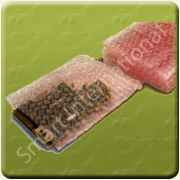 | ||
| Surface resistivity | : | < = 1011 W / (ASTM D257) | |
| Surface resistance | : | < = 1010 W (EOS/ESD S11.11) | |
| Static decay | : | < 2 sec (FTMS 101C, Method 4046) | |
Anti static chair is essentially designed for discharging the accumulated electrical charges for the operator during critical electronic assembly. |
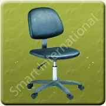 | ||
| Height adjustable. | SPECIFICATIONS :
Surface Resistivity of seat & back: 106 – 109 Ohm/ Sq |
||
| Revolving. | |||
| With Antistatic cushioned seat & back. | |||
| Conductive castor wheels. | |||
| Arm rest available as optional. | |||
| Elegantly painted / plated for durability. | |||
| Composition | 98% Polyester filament yarn 2% Carbon filament yarn |
ASTM-D-629 | 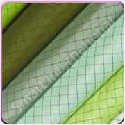 |
| Weave | 2/1 twill, 5mm grid | ||
| Weight | 170 g/y (122 g/m²) ± 5% | ||
| Width | 60 inch (152cm) ± 2% | ||
| Density | Warp: 188 ends / inch (74 ends/cm) ± 5% Weft: 94 ends / inch (37 ends/cm) ± 5% |
||
| Yarn Type | Warp: Polyester 100D/36F; Conductive yarn Weft: Polyester 100D/36F; Conductive yarn |
||
| Surface Resistivity | 10 6-7(42%R.H., 21˚C) ohm/square | DIN 54345 | |
| Friction Charges | Warp: 39V, Weft: 27V |
JIS L1094-B | |
| Decay Time | ± 0.01 (42%R.H., 21˚C) sec | NFPA-99 | |
| Air Permeability | 4.0 c.c/cm²/sec | JIS L1094-B | |
| Tear Strength | Warp: 2.5 kg Weft: 1.9 kg |
ISO 5082 : 1982-1”grab test | |
| Tensile Strength | Warp: 63 kg Weft: 70.6 kg |
ISO: 9290 : 1990-falling Pendulum method B |
|
| Color Retention | After water washing 4-5 grade, After wet friction 4-5 grade, Light fastness 4-5 grade, After dry friction 4-5 grade |
ISO 105 C03-30min |
|
| Filtration Efficiency | 0.3 m m (52%) |
Washed under a controlled process to remove particles and reactive ions (Na+, K+, Ca2, Mg2, Nz2+, Cl, SO42) |
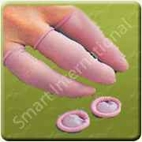 |
| Surface resistivity (109 to 1011 Ω/sq) – suitable for handling of Class II, Category B (100V) ESD | |
| Suggested for Class II (2000 – 3999V) static sensitive devices | |
| Ultra low powder cot surface minimizes particulate contamination | |
Ultra low levels of extractable and residual ions prevent product failure |
|
Packing done in clean environment |
Inexpensive Foam with Antistatic property designed for general packaging and cushioning functions in ESD sensitive area. |
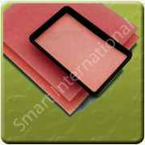 |
This product comes in clear transparent or pink transparent to provide visibility of packaged items. Other colours also available upon customers’ request. |
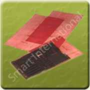 |
| Optional feature: Zip-lock design | |
| Material thickness : 4 mils (0.1mm) | |
| Surface Resistivity :£ 1 x 1011 Ohm/sq. (ASTM D257) | |
Surface Resistance: £ 1x 1010 Ohm (EOS/ESD S11.11) |
|
Static decay: < 2 sec (FTMS 101C, Method 4046) |
| Material | : | Homogeneous composition with black Conductive layer sandwiched between Two antistatic layers | 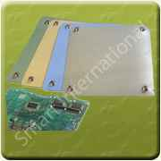 |
| Thickness | : | 2mm +/- 0.1mm | |
| Flexibility | : | Does not break, crack or show any Sign of failure | |
| Sound Reduction Factor | : | 3 db for 2 mm thickness | |
| Inflammability | : | Self-extinguishing | |
| Water Absorption | : | At room temperature for 24 hours is Less than 0.1% |
|
| Color | : | Grey /Blue | |
| ELECTRICAL PROPERTIES: | |||
| Surface Resistivity | : | 107–109.Ohms /sq | |
| Decay Time | : | Less than 2 seconds |
This slipper provides effective and reliable way to remove static charge. This one-piece sole design allows human body static charges to dissipative via the insole to the floor. This design does not utilize any copper foil for adhering the insole to the outer sole for electrical conductivity.
• Excellent durability and comfort • Single Piece Molded Sole • Marked with ESD caution logo to distinguist from normal footwear • Economically priced |
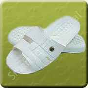 | ||
| Materials | : | Sole : Static Dissipative PVC Top : PVC |
|
| Surface Resistivity | : | Sole : 1.0 × 10E9 to 1.0 × 10E11 ohm/sq | |
| Resistance to ground | : |
|
|
| Color | : | White | |
| Sizes | : | 240, 250, 260 and 270 mm |
|
Static Electricity, accumulated on surface like Monitors, Mobile, work surfaces, carpets, etc., can be the cause for ESD failure, as also attracts dust and contamination. Antistatic spray or solution, when applied would create a conductive path on that inaccessible surface discharging the static charges temporarily affecting for approximately 48 hours depending on the usage. |
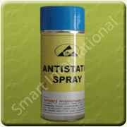 |
| SPECIFICATIONS
|
|
| Medium -Solvent (IPA) Base - Aqueous Based | |
| Application -Aerosol Spraying | |
| Surface Resistivity - 109 to 1011Ohms/Sq | |
| Shelf Life -6 Months - 6 Months |
This polyester film antistatic coating tapes do not generate static within the decay rates of MIL B-81705. It is clear and having the acrylic adhesive that is commonly used in shielding package for semiconductor and electronic components. |
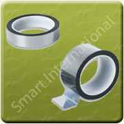 |
| Features
|
|
| • Size: 6 mm x 50 m, 25 mm x 50 m, 50 mm x 50 m |
As per ANSI/ESD S20:20 all conductors including Personnel must be electrically connected and attached to a known ground. |
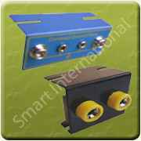 |
| Anti-static work station operators need a convenient method of grounding their wrist straps where the ground cord won’t get in the way of their work. This Common Ground Point brings all the connections (buttons & sockets) to the same potential before grounding. | |
| FEATURES : | |
| M.S powder coated is designed to mount under bench, saving work surface space. | |
| Two meter grounding cable, at one end LUG provided for attachment to ground. | |
| 1 Meg Ohms resistance is optional for CGP. |
ESD EARTH BONDING PLUG is designed to provide safe, effective and easy to use in earthing point in an ESD protected area (EPA). The plug fits in to the mains supply socket, making a connection with the earth conductor only. In place of the Line & Neutral pins are molded insulating plastic pins to allow positive location in the socket. Banana Sockets & Button are provided for the various elements such as table Mat, Floor Mat, Wrist Strap & Grounding Cords etc.. |
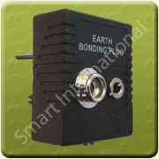 | ||
| The normal earth pin is linked with 1 Meg Ohms resistor to the banana sockets & button to limit the reverse current from the earth. | |||
| SPECIFICATIONS : | |||
| Colour | : | Black | |
| Box Size | : | 48 x 38 x 18 mm | |
| Weight | : | 25 Gms | |
| Safe Resistance value | : | 1 Meg Ohms | |
Features: |
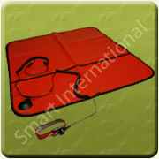 | ||
| This Portable Field Service Kit provides effective static protection in a compact package for the electronic field technician. The entire kit folds to a size that fits easily into most tool cases. The two pockets sewn into the work mat provides storage for coiled cords and wrist band.SPECIFICATIONS :Colour:BlackBox Size:48 x 38 x 18 mmWeight:25 GmsSafe Resistance value:1 Meg Ohms | |||
Every Antistatic table mat and ESD Table top laminate requires grounding cord for grounding. Our GC-01, GC-02 & GC-03 is specially designed for the grounding purpose.
GC -01 Features:- Two meter standard copper wire ground cord. both sides 10mm female snaps for easy attachments to mats. |
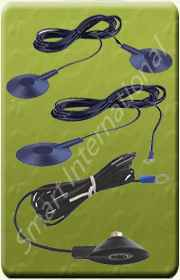 |
GC -02 Features: - Two meter standard copper wire ground cord. Includes 10mm female snap for easy attachments to mats. Built in 1MΏ, provides a safe level of isolation from being grounding directly. Lug/Crocodile clip can be provided at the end of cord for attachment to earth. |
|
GC -03 Features: - Two meter standard copper wire ground cord. Includes 10mm male and female snaps for easy attachments to mats and additional groundings. Built in 1MΏ, provides a safe level of isolation from being grounding directly.
|
Static Control Heel Grounder :
This reusable heel grounder is made of conductive rubber with an adjustable hook and loop strap and conductive polyester ribbon for body contact. It provides safe and reliable grounding between mobile personnel and conductive flooring. Specification : Ribbon to cup resistance (@100 V) 1 x 106 -1 x 107 W For mobile personnel when wrist straps are not practical Heel Grounder must be used with properly grounded floors Use Heel Grounders on both feet for proper grounding |
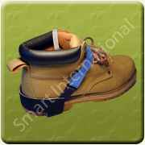 |
| Features | 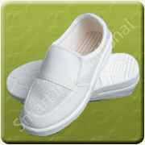 | ||
This shoe has a two-piece construction of PU top material and a unique one piece molded static dissipative PU sole. This one-piece sole design allows human body static charges to dissipate via the insole to the floor. This design does not utilize any copper foil for adhering the insole to the outer sole for electrical conductivity. • Single Piece Molded Sole • Excellent Electrical Properties • Non-Marking, Non-Slip Sole • Machine Washable • Better Cushion at insole and heel portion |
|||
| Specifications:- | |||
| Materials | : | Top : PU Sole : Static Dissipative PU |
|
| Surface Resistivity | : | Sole : 1.0 × 10E7 to 1.0 × 10E10 ohm/sq | |
| Resistance to ground | : | 1.0 × 10E6 to 1.0 × 10E9 ohm |
|
| Color | : | Top : White Sole : White |
|
| Sizes | : | 220, 225, 230, 235, 240, 245, 250, 255, 260, 265, 270, 275, 280, 285, 290, 295 and 300 mm | |
Features : Our Static Shield bags are made from high quality antistatic metallized film which provides optimum protection for your ESD sensitive products. The 3.1 mil thick material offers superior durability. • Creates a Faraday cage effect to protect your products from electrostatic discharge. • High quality material provides excellent protection from punctures and tears. • Polycarbonate Compatible, contains no Amines, Amides or N-Octanic Acid. • Fast delivery for any custom sizes. • Printed with ESD awareness logo and date code for traceability. |
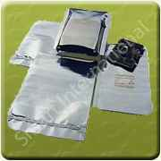 | ||
| Specifications:- | |||
| Materials | : | Top : PU :: Sole : Static Dissipative PU |
|
| Surface Resistivity | : | Sole : 1.0 × 10E7 to 1.0 × 10E10 ohm/sq | |
| Resistance to ground | : | 1.0 × 10E6 to 1.0 × 10E9 ohm |
|
| Color | : | Top : White :: Sole : White |
|
| Sizes | : | 220, 225, 230, 235, 240, 245, 250, 255, 260, 265, 270, 275, 280, 285, 290, 295 and 300 mm | |